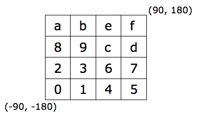
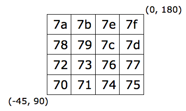

©2010 Google -
Code Home -
Terms of Service -
Privacy Policy -
Site Directory
Google Code offered in:
English -
Español -
日本語 -
한국어 -
Português -
Pусский -
中文(简体) -
中文(繁體)
Maps Javascript API V3
Maps Javascript API V2
(Deprecated API)
Maps API for Flash
Maps Data API
(Deprecated API)
Static Maps API
Earth API
-
Local Search API
(Deprecated API)
Includes enterprise licensing and support
Geospatial Queries with Google App Engine using GeoModel
Roman Nurik and Shawn Shen, Google Geo APIs Team
December 2009


Inside
December 2009
Two common types of spatial queries used in Maps mash-ups are proximity searches and bounding box queries. Proximity searches return all results within a certain distance of a location. Bounding box queries return all results in a bounding box of four points defined by its four corners. These types of searches are useful in a wide variety of mash-ups. For instance, a store finder on a website typically allows the user to show all stores within a certain radius. Or it may want to show all stores that are in the current map boundaries. While intuitively simple, these searches can be computationally difficult.
In this tutorial we will show how to implement these kinds of geospatial searches
using the open source project GeoModel
in Python hosted on Google App Engine (GAE). We will build a demo app
PubSchools, which displays public schools
using bounding box and proximity searches. Developers familiar with Python will
get the most out of this article.
The tutorial is organized into the following sections:
- Geospatial Queries
- App Engine Datastore
GeoModeland Geocells- Inside
PubSchoolsDemo - Putting It Together
- Where to Go From Here
Geospatial Queries
A typical use case of geospatial queries is find the closest 20 locations
that are within a radius of 25 miles to the center of the bounnding box given by (lat_t, lng_t).
This kind of proximity query requires calculation of relative distances between latitude/longitudes
of pre-defined and pre-loaded geo locations and the target latitude/longitude so that the distance algorithm
can filter by a cut-off distance and order the results by distance. The actual
SQL query looks like this:
SELECT id, ( 3959 * acos( cos( radians(lat_t) ) * cos( radians( lat ) ) * cos( radians( lng ) - radians(lng_t) )
+ sin( radians(lat_t) ) * sin( radians( lat ) ) ) ) AS distance
FROM Stores HAVING distance < 25
ORDER BY distance
where Stores is a table that holds the pre-defined and pre-loaded entities
of interest with geo locations such as stores or schools, whose fields lat and lng contain
their respective latitude and longitude (See detail here).
Since relative distances must be calculated based on user input of target location given by (lat_t, lng_t),
it results in a rather expensive query every time a new set of lat/lng is submitted as input of a new request.
Similarly a bounding box query might look like this in SQL:
SELECT *
FROM Stores
WHERE lat > (lat_t - d) AND
lat < (lat_t + d) AND
lng > (lng_t - d) AND
lng < (lng_t + d)
where (lat_t, lng_t) represents target coordinate and d
a fixed size for bounding box. While this type of bounding box query can be implemented with proper
indexes in SQL database, it presents a difficulty for the App Engine Datastore, as described in the
next section.
App Engine Datastore
Google App Engine (GAE) enables you to build web applications on the same scalable systems that power Google applications. App Engine applications are easy to build, easy to maintain, and easy to scale as your traffic and data storage needs grow. With App Engine, there are no servers to maintain: You just upload your application, and it's ready to serve to your users.
Although Google App Engine has an SQL-like query language, GQL, its Datastore differs significantly from typical relational database (see Under the Cover of the App Engine Datastore). For example, while a simple query like the following is possible:
db.GqlQuery("SELECT * FROM Stores ORDER BY <some property> DESC")
GQL does not support table 'joins' nor 'having' clause commands. These syntax restrictions make it
difficult to construct a SQL like 'having distance < 25'. This makes it impossible to have
a query by proximity in App Engine.
Bounding box queries are also not supported in App Engine because there need to be two inequalities on two independent properties. App Engine is optimized for performing lookups of single properties and lookups are implemented via indexes over many servers. When a query needs to compare values of two independent properties, it would have to spawn two lookups that would have to be executed as two separate processes on physically separate servers but then merging and sorting returned dataset over two servers would be problematic at minimum and in general not optimized for high performance. This makes it impossible to have a scalable solution for this type of queries.
These limitations on queries prevent us from running either proximity or bounding box queries in App Engine.
To implement these types of searches, we need to use another mechanism by introducing a concept called
geocell and a GeoModel class.
GeoModel and Geocells
GeoModel is an open source project that aims to
provide a generalized solution for performing basic indexing and querying of geospatial data in
Google App Engine. This implementation introduces a concept called geocell,
which is a coordinate system that divides the world up into rectangular cells. The idea is inspired by similar
concepts in geohashing. See detailed explanation of geocell
in later section but for now think of it as a rectangular region at various zoom levels.
The GeoModel class implements a base class that comes with two key interfaces. Developers
can define application-specific entities by extending GeoModel class and call
the following two methods without having to do much coding.
Proximity Search
@staticmethod def proximity_fetch(query, center, max_results=10, max_distance=0):
The proximity_fetch() method is statically defined at class level
with the following list of parameters:
query: an object ofdb.Querytype, which can be used to specify additional filtering and sorting on entities like stores or schools (more on this inPubSchoolsexample below)center: the center point of search based on user inputmax_results: max number of results to returnmax_distanceradius of proximity search
Proximity query starts with a geocell that contains the center point and queries
that geocell. It then bubbles its way up to adjacent geocells of next resolutions within
a cut-off distance supplied by the search radius. Here a geocell is basically a rectangular
box labeled by a hexadecimal string, the length of which represents its resolution.
See the sample geocells in the image on the left.
Bounding Box Search
@staticmethod def bounding_box_fetch(query, bbox, max_results=1000, cost_function=None):
The bounding_box_fetch() method is statically defined at class level
with the following list of parameters:
query: an object ofdb.Querytype, which can be used to specify additional filteringbbox: an object ofgeotypes.Boxtype representing a bounding boxmax_results: max number of results to return
The parameter cost_function is an optional resource calculation that accepts two arguments,
num_cells and resolution of each geocell to search, and returns the
'cost' calculated in number for querying against this number of cells at the given resolution.
The bounding box query starts off with a list of geocells inside the input bounding box and then runs queries against each geocell for relevant entities, merges them, and returns them in a list.
As you may see, both proximity and bounding box searches rely on a key concept of
geocell in GeoModel. The next section will explain how this works.
Geocells
In GeoModel a geocell is labeled by a hexadecimal string that defines
a two dimensional rectangular region inside the [-90,90] x [-180,180] latitude/longitude
space. Resolution of a geocell is measured by the length of its string label. We start
out with 16 geocells labeled by hexdecimal number with a single digit and subsequently
divide each geocell into 16 more geocells labeled by hexdecimal strings with more digits.
This kind of hierarchical structure of geocells is similar to
geohash in that any prefix of a geocell
is considered its ancestor, with geocell[:-1] being geocell's immediate
parent cell. As resolution increases, label of a geocell gets longer and the area covered
by the geocell more granular. For most practical purposes, at very high resolutions (e.g.
precision of 13 digits), geocells can be treated as single points.
To calculate the rectangle of a given geocell string, for example '78a', first divide the [-90,90] x [-180,180] latitude/longitude space evenly into a 4x4 grid as shown in Diagram 1 below:

Diagram 1

Diagram 2
Note that the point (0, 0) is at the intersection of grid cells 3, 6, 9 and c. Each cell is divided into additional 4x4 grid. For the example of geostring '78a', cell '7' further divides as shown in Diagram 2 above, and should represent the sub-rectangle from (-45, 90) to (0, 180).
If we continue to re-divide cell '78' into 4x4 grid of sub-rectangles, we will arrive at cell '78a'. In general this is the approach to map a geostring to a particular geocell:
- Start with the initial 4x4 grid that represents the [-90,90] x [-180,180] latitude/longitude space
- Divide rectangles into 4x4 grids and sub-rectangles successively
- Continue until the entire geocell string has been exhausted and the final sub-rectangle is the rectangular region for the geocell
Inside PubSchools Demo
The PubSchools demo app demonstrates how
to extend GeoModel and implement geospatial search for public schools. Follow the link
to check out the demo and enter searches (e.g. New York, NY or 94040) to see a list of
public schools. The sample source code is available
here.
Class Model
To define your own application-specific class for your own entities, you extend from GeoModel.
Here is how PubSchools class entends from Geo Model:
class PublicSchool(GeoModel): """A location-aware model for public school entities. """ school_id = db.StringProperty() name = db.StringProperty() address = db.StringProperty() city = db.StringProperty() state = db.StringProperty() zip_code = db.IntegerProperty() enrollment = db.IntegerProperty() phone_number = db.StringProperty() locale_code = db.IntegerProperty() school_type = db.IntegerProperty() school_level = db.IntegerProperty() grades_taught = db.ListProperty(int)
The application-specific properties of PubSchools class such as
address, name, or grades_taught allow additional
query possibilities but the essential functionality of geospatial queries (namely proximity
and bounding box searches) is inherited from GeoModel.
Data Flow
Let's say the user enters a query with location info such as 'New York, NY' or
'1600 Pennsylvania Ave NW, Washington, DC.' The PubSchools demo app will
geocode the address first. If the query geocodes to something resembling an address or an intersection,
a proximity search is done; otherwise a bounding box search is done on the geocoded area's extents.
(see front.js
for more detail). The demo app will then make an Ajax call using doSearch function as follows.
<script type="text/javascript">
if (proximitySearch) {
doSearch(updateObject(commonOptions, {
type: 'proximity',
center: bounds.getCenter()
}));
} else {
doSearch(updateObject(commonOptions, {
type: 'bounds',
bounds: bounds
}));
}
...
function doSearch(options) {
...
// Perform proximity or bounds search.
g_currentSearchXHR = $.ajax({
url: '/s/search',
type: 'get',
data: searchParameters,
dataType: 'json',
...
}
</script>
The doSearch function sends a request to an endpoint 's/search'
as shown in the code snippet above. More detailed query parameters such as type of search
(bounding box or proximity) and center or bbox boundary are all wrapped inside the
searchParameters. Requests get processed by PubSchools's service handler
service.py.
The Python code snippet is given as follows.
# Perform proximity or bounds fetch. if query_type == 'proximity': results = PublicSchool.proximity_fetch(base_query, center, max_results=max_results, max_distance=max_distance) elif query_type == 'bounds': results = PublicSchool.bounding_box_fetch(base_query, bounds, max_results=max_results)
Here PubSchools calls either proximity_fetch() or bounding_box_fetch()
static method from its parent class GeoModel and returns results in JSON back to a callback function
of the originating Ajax call, which parses out the results and renders them onto Google Map as markers.
JSON Data Service
Typical JSON data returned by 's/search' service is shown below.
{"status": "success", "results": [{"phone_number": "(908) 436-6855", "city": "ELIZABETH", "name": "ELIZABETH HIGH",
"school_level": 3, "enrollment": 5279, "highest_grade_taught": 12, "lowest_grade_taught": 9, "school_type": 1,
"locale_code": 21, "state": "NJ", "address": "600 PEARL STREET", "lat": 40.6603361, "lng": -74.2116865, "school_id":
"340459005478", "zip_code": 7202}]}
Once JSON data are successfully returned to the callback function, the entities inside the data get parsed out and
rendered properly on the map as markers. Detailed info shows in a pop-up info window when a marker is clicked.
See front.js
for more detail on success: function(obj) callback function.
Batch Load Data
Note that data of public schools with location info like latitude and longitude have to be loaded into
App Engine Datastore of PubSchools demo beforehand in order for
geospatial queries to return results. This is done via the appcfg.py upload_data utility.
We will skip the detail here but source code and info can be found in the
batch folder.
Putting It Together
Having covered geospatial queries, App Engine Datastore, GeoModel,
and internal design of PubSchools demo, you can put it all together and see the app
in action. Here's a screenshot of PubSchools but take a test drive of the live demo at
PubSchools and experiment with various
queries, and toggle between map and list views.

It is straightforward to set up the maps UI in this demo. As shown below,
we include jquery library, set up a Google Maps API key, and include the front.js.
<script type="text/javascript" src="http://ajax.googleapis.com/ajax/libs/jquery/1.3.2/jquery.min.js"></script>
<script type="text/javascript" src="http://ajax.googleapis.com/ajax/libs/jqueryui/1.7.2/jquery-ui.min.js"></script>
<script type="text/javascript" src="http://www.google.com/jsapi?key=<YOUR_API_KEY>"></script>
<script type="text/javascript" src="/static/lib/jquery.scrollTo-1.4.2-min.js"></script>
<script type="text/javascript" src="/static/lib/microtemplate.js"></script>
<script type="text/javascript" src="/static/js/front.js"></script>
<script type="text/javascript">
google.load('maps', '2');
google.setOnLoadCallback(init);
</script>
The setOnLoadCallback sets init as callback function
of onLoad complete. The init function in turn calls initMap and
initUI functions.
/**
* On body/APIs ready callback.
*/
function init() {
initMap();
initUI();
}
/**
* Creates the Google Maps API instance.
*/
function initMap() {
map = new google.maps.Map2($('#map').get(0));
map.setCenter(new google.maps.LatLng(39,-96), 4);
geocoder = new google.maps.ClientGeocoder();
// anything besides default will not work in list view
map.setUIToDefault();
}
The initMap function loads Google Maps into the 'map' div,
centers it around lat/lon (39, -96) in this case, and sets it to default view
while initUI sets up various other UI components and event listeners
(see front.js
for more detail) to get ready for user queries. When user enters query and clicks on
the Search button, an Ajax request is constructed and submitted according to the data flow
outlined above. The JSON results returned from the '/s/search' service endpoint
are rendered on map UI by callback function.
Where to Go From Here
For other approaches to geospatial queries in Google App Engine, see a geohash-based geodatastore project.
Another possible backend solution for spatial queries is the Google Maps Data API. Recently, it added proximity and bounding box searches as well as attribute search. See Maps Data API for more info and stay tuned for search capabiity in upcoming revisions.